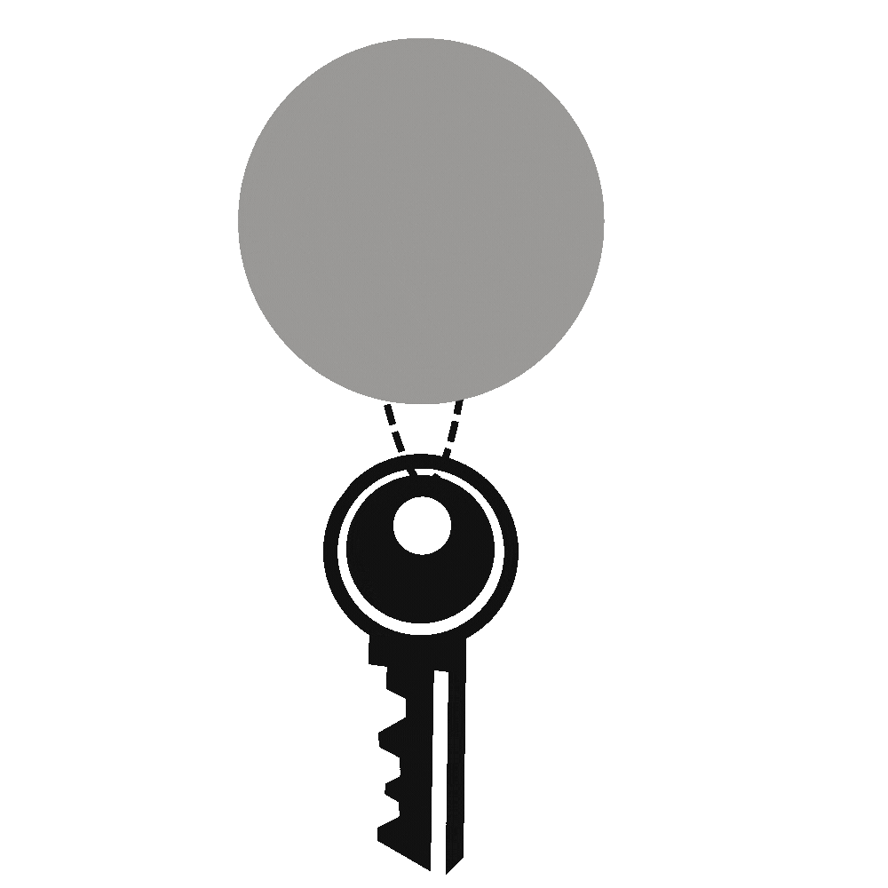

Instant recall
Open the popover, type two letters, hit return. Your key is on the clipboard before the window finishes fading in.

Keyholdr Mac App StoreNative for macOS
A native vault that lives quietly in your menu bar. Hardware-backed storage, biometric unlock, and your API keys on the clipboard in a blink.
Try it — click a key to copy, or flip to Notes
No dock icon, no window, no clutter. Keyholdr sits beside your clock and opens with a click — or ⌃⌥⌘K from anywhere. Search, copy, gone.
Open the popover, type two letters, hit return. Your key is on the clipboard before the window finishes fading in.
Platform names resolve to icons and themes automatically — GitHub, AWS, Stripe, Anthropic — no manual organizing.
Click away and the popover vanishes and locks. Nothing lingers on screen, nothing stays decrypted.
Pure SwiftUI. Under 1 MB, negligible memory, zero Chromium.
Starts at login and survives reboots — toggle it off in one click if you'd rather it didn't.
Export the whole vault to one passphrase-encrypted file and import it on your next machine. No cloud required.
A Notes tab beside Keys for the text you'd otherwise open Notes.app for — a command to re-run, a link to paste later. Autosaves as you type, one click to copy.
Run keyholdr for a full-screen view of your keys and notes — search, copy behind Touch ID, add and delete. Every one-liner still works.
Metadata and secrets never travel together. Names and labels live in a local file — the secrets themselves go straight into the operating system's hardware-backed vault and never touch the disk in cleartext.
Secrets are written straight to your Mac's hardware-backed credential store, Keychain Services, encrypted by macOS.
Touch ID or Apple Watch is required before any secret is decrypted. Physical presence, every time.
No servers, no sync, no analytics, no network calls. Your keys never leave the machine.
The key list mirrors itself into the OS vault. Delete the app, its files, or both — reinstall and everything is still there.
Keyholdr declares no data collected on the Mac App Store. No identifiers, no usage data, no diagnostics — nothing leaves your device.
Scratch notes are plain text in a local file — not in the Keychain and not behind Touch ID. Keep API keys in Keys, and use Notes for everything else.
Keyholdr is a free, native macOS app for storing API keys. It lives in the menu bar, keeps each secret as its own item in the macOS Keychain, and asks for Touch ID before any key is copied or read. A keyholdr command-line tool and full-screen terminal UI use the same vault. It runs on macOS 13 Ventura or later and is under 1 MB.
In the macOS Keychain, not in ~/.zshrc, a .env file or a notes app. The Keychain encrypts items on disk and can require Touch ID before releasing one. Then pass a key only to the command that needs it, for example keyholdr run -e OPENAI_API_KEY=openai -- npm start. The full guide covers each option.
A .env file is plain text that any program running as you can read, and it is easy to commit, copy into a Docker image or sync by accident. With Keyholdr the secret stays encrypted in the Keychain and is handed only to the command you run, after Touch ID. If a tool insists on a .env file, keyholdr env --dotenv prints one on demand.
Yes. Every copy, every reveal and every terminal read asks for Touch ID. Macs without Touch ID use Apple Watch or your login password instead. The popover locks again as soon as you click away.
No. Keyholdr makes no network connections, and keys are never sent to iCloud or any server. To move to a new Mac, export the vault to one passphrase-encrypted file (PBKDF2-SHA256, then AES-256-GCM) and import it there.
Yes. keyholdr run injects keys into one command as environment variables, keyholdr env loads them into the current shell, keyholdr get prints one, and bare keyholdr opens a full-screen terminal UI. The Mac App Store version is sandboxed, so for the terminal install the Homebrew build: brew install --cask olixignacious/tap/keyholdr. See the CLI reference.
Yes, through a small MCP bridge that calls the keyholdr command for Claude Desktop, Claude Code and other MCP clients. Every request still shows a Touch ID prompt on your Mac, and nothing gets pasted into a config file or a chat.
Keyholdr is free, works in both the menu bar and the terminal, asks for Touch ID on every read and runs on macOS 13. It doesn't sync between Macs, import .env files or clear the clipboard. The comparison with NoxKey, Fidelius, EnvVault, 1Password CLI and others covers which one fits which workflow.
Keyholdr is free, with no account. Its source code is public on GitHub under a non-commercial licence: you can read, build and modify it for personal use, but it is not an OSI open-source licence.
Free · no account, ever